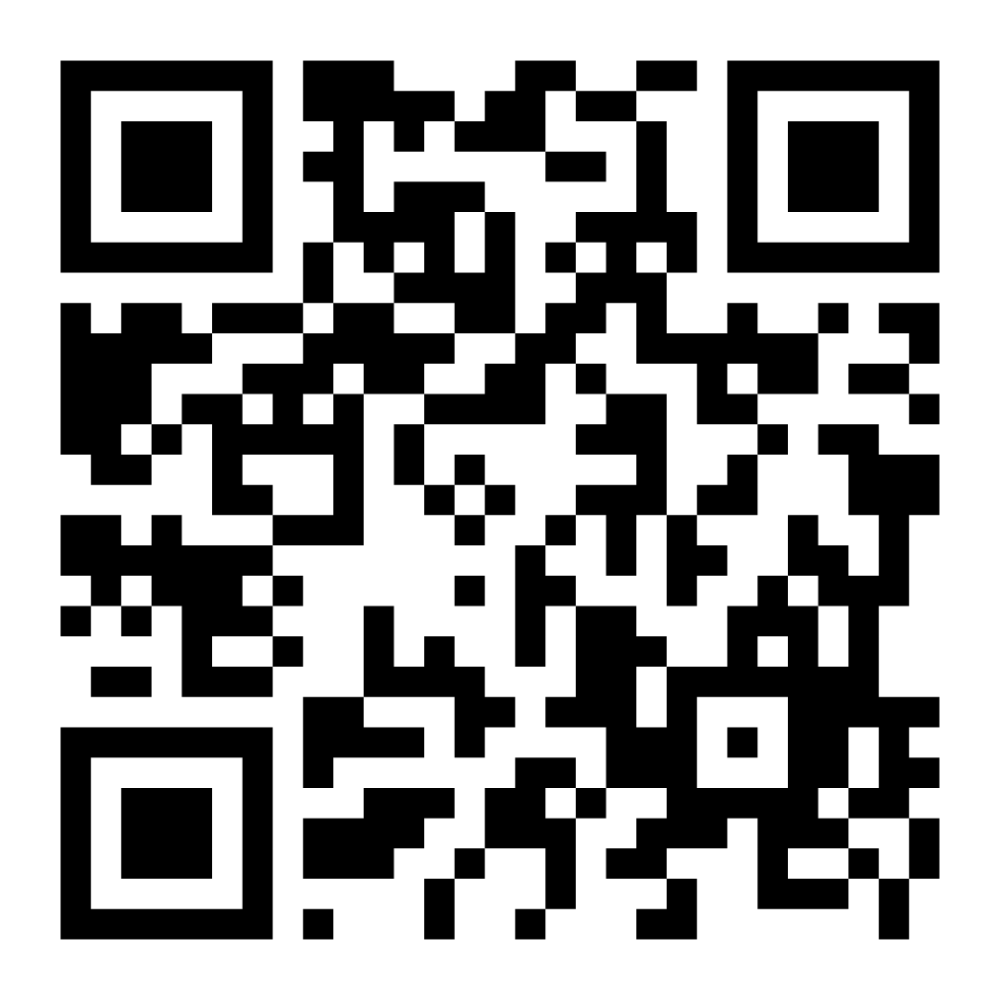

5 categorias. Escolha a sua.
Senac Aprendizagem + Trampolim
Ensino Médio Técnico Integrado (presencial)
Técnicos, Especialização e Qualificação (presencial/híbrido)
Cursos de graduação (presencial/EAD)
Cursos de pós-graduação (presencial/EAD)
Quem vai usar ou pagar?
Qual dificuldade real essa pessoa enfrenta?
O que você oferece e como funciona?
Como você ganha dinheiro com isso?
Inscrição + Vídeo de 1 minuto
Plano + Vídeo de Apoio
Apresentação presencial em São Paulo
entregue com até 1 minuto exato
do início até a fase final
antes do painel da fase final
Se você trabalhasse 8h/dia, 5 dias/semana ganhando salário mínimo, levaria mais de 3 anos para juntar R$ 55 mil.
No Empreenda Senac, você pode conquistar isso apresentando uma ideia — dentro do horário de aula, com apoio do Senac.
O prêmio é real. O regulamento é oficial. A única coisa que falta é a sua inscrição.

Se a timidez for um obstáculo, não fique de fora! Use essas I.A.s incríveis para gerar avatares fotorrealistas ou estruturar roteiros perfeitos para o seu vídeo em minutos.
Escreva o roteiro e a ferramenta cria um vídeo de um apresentador realista falando por você.
Crie podcasts brilhantes com a sua voz ou use a IA como colega para estruturar seu texto.
Selecione uma categoria abaixo e descubra ideias focadas em inovação para usar como base no seu Empreenda.
Preencha os dados abaixo. Após salvar, o botão de imprimir será destravado para você baixar seu modelo A5 e essa ideia ficará indisponível para outros alunos da sua unidade!